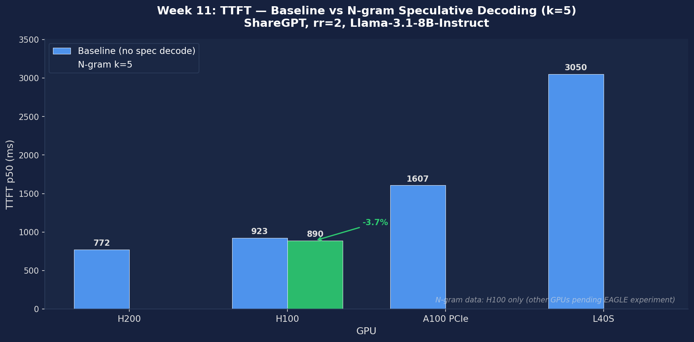
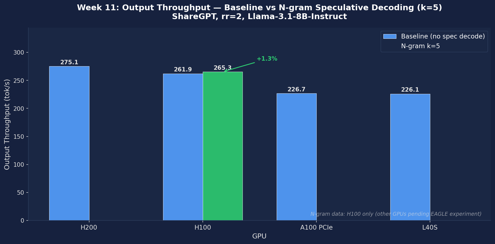

Accelerate autoregressive generation by drafting multiple tokens with a small model and verifying them in parallel with the target model; measure acceptance rate, speedup, and compare draft-model vs. N-gram strategies
All speculative decoding methods share the same three-phase loop: (1) a proposer generates k candidate tokens cheaply, (2) the target model verifies all k tokens in a single batched forward pass, (3) rejection sampling decides which to keep. For each draft token \(t_i\), accept with probability \(\min\!\left(1,\,\frac{p_{\text{target}}(t_i)}{p_{\text{draft}}(t_i)}\right)\). This guarantees the output distribution exactly matches the target model. Theoretical speedup: \(E[\text{tokens/step}] = \frac{1-\alpha^{k+1}}{1-\alpha}\), where \(\alpha\) is the per-token acceptance rate. The three methods below differ only in how the proposer works.
Load a smaller model from the same family (e.g., Llama-3.2-1B for target Llama-3.1-8B) and run k autoregressive forward passes to propose k tokens. The draft model must share the same tokenizer and vocabulary (vocab_size=128256) as the target — otherwise rejection sampling produces out-of-bounds errors.
Instead of a separate LLM, EAGLE trains a small autoregressive head (1–2 transformer layers, ~200M params) that takes the target model's own hidden states as input and predicts the next-token distribution. After each target forward pass, the EAGLE head reuses the already-computed hidden states to propose k tokens with minimal overhead — no separate model, no vocabulary mismatch.
The simplest method: search the existing prompt/context for the most recent occurrence of the last n tokens. If the context contains [A, B, C] followed by [D, E, F], and the model just generated [A, B, C], propose [D, E, F]. Implemented as a Numba-JIT-compiled hash table — zero GPU compute, zero extra memory. It can only propose tokens already seen in the context, so acceptance depends entirely on textual repetition in the workload.
| Strategy | Extra Memory | Acceptance Rate | Best For |
|---|---|---|---|
| Draft Model (TinyLlama-1.1B) | ~2 GB VRAM for weights | 70–85% | General text generation; robust across diverse prompt distributions |
| N-gram | Negligible (prompt hash table) | 50–95% (highly task-dependent) | Document QA, code completion, summarization with high input repetition |
| EAGLE | ~0.5 GB (autoregressive head only) | 85–95% | Best quality-efficiency tradeoff; uses the target model's own hidden states as draft features — no alignment mismatch |
# Verify vLLM installation and check version supports spec decode
pip show vllm
# Pre-download TinyLlama draft model weights
python -c "from transformers import AutoTokenizer; AutoTokenizer.from_pretrained('TinyLlama/TinyLlama-1.1B-Chat-v1.0')"
# Baseline server: standard autoregressive decoding, no spec decode
vllm serve meta-llama/Llama-3.1-8B-Instruct \
--port 8000 --disable-log-requests &
# Draft-model speculative decoding server (TinyLlama, k=5)
vllm serve meta-llama/Llama-3.1-8B-Instruct \
--speculative-model TinyLlama/TinyLlama-1.1B-Chat-v1.0 \
--num-speculative-tokens 5 \
--port 8001 --disable-log-requests &
# N-gram speculative decoding server (no extra model, k=5, ngram window=4)
vllm serve meta-llama/Llama-3.1-8B-Instruct \
--speculative-model [ngram] \
--num-speculative-tokens 5 \
--ngram-prompt-lookup-max 4 \
--port 8002 --disable-log-requests &Establish the reference latency with standard autoregressive decoding. Use input-len=512, output-len=128 to put weight on the decode phase. All speedup ratios in subsequent experiments use this run as the denominator.
# Baseline: standard decoding, batch_size=1
python benchmarks/benchmark_latency.py \
--model meta-llama/Llama-3.1-8B-Instruct \
--batch-size 1 --input-len 512 --output-len 128 \
2>&1 | tee results_baseline_bs1.txt
# Record baseline tokens/s for speedup calculations
grep -E "Throughput|tokens/s" results_baseline_bs1.txtEnable speculative decoding with TinyLlama-1.1B as the draft model and k=5 speculative tokens. Monitor the acceptance_rate field in vLLM's stats log — this is the single most important metric for diagnosing speedup.
# Draft-model spec decode, batch_size=1, k=5
python benchmarks/benchmark_latency.py \
--model meta-llama/Llama-3.1-8B-Instruct \
--speculative-model TinyLlama/TinyLlama-1.1B-Chat-v1.0 \
--num-speculative-tokens 5 \
--batch-size 1 --input-len 512 --output-len 128 \
2>&1 | tee results_draft_k5_bs1.txt
# Key metrics to extract:
# acceptance_rate — fraction of draft tokens the target accepted
# mean_accepted_tokens — avg tokens produced per speculative step
# Throughput — end-to-end tokens/s vs. baseline
grep -E "acceptance|accepted|Throughput" results_draft_k5_bs1.txtTest N-gram speculative decoding — zero extra VRAM, zero draft model inference. Use the same benchmark configuration to get a direct comparison with the TinyLlama draft run. Try two prompt types: random chat (lower repetition) and a document repetition task.
# N-gram spec decode, k=5, ngram window=4
python benchmarks/benchmark_latency.py \
--model meta-llama/Llama-3.1-8B-Instruct \
--speculative-model [ngram] \
--num-speculative-tokens 5 \
--ngram-prompt-lookup-max 4 \
--batch-size 1 --input-len 512 --output-len 128 \
2>&1 | tee results_ngram_k5_bs1.txt
# Expected: lower acceptance on random chat vs. draft-model
# N-gram excels when prompt and output share repeated n-grams
grep -E "acceptance|Throughput" results_ngram_k5_bs1.txtSweep k from 1 to 7. Larger k increases the potential speedup ceiling but also raises the probability that at least one draft token is rejected, reducing mean_accepted_tokens. Find the k that maximizes end-to-end tokens/s for the TinyLlama/Llama-3.1-8B pair.
for k in 1 3 5 7; do
echo "=== k=$k ==="
python benchmarks/benchmark_latency.py \
--model meta-llama/Llama-3.1-8B-Instruct \
--speculative-model TinyLlama/TinyLlama-1.1B-Chat-v1.0 \
--num-speculative-tokens $k \
--batch-size 1 --input-len 512 --output-len 128 \
2>&1 | tee results_draft_k${k}.txt
done
# Summarize tokens/s across k values
for k in 1 3 5 7; do
printf "k=%-2s " $k
grep "Throughput" results_draft_k${k}.txt | tail -1
doneRun the online serving benchmark at request rate 1 req/s (low-QPS) and rate=inf (closed-loop, high-QPS). At low QPS each request runs near-solo, so latency reductions from spec decode translate directly to user benefit. At high QPS, larger effective batch sizes fill the GPU and draft overhead becomes wasteful.
for mode in baseline spec; do
for rate in 1 inf; do
if [ $mode = "baseline" ]; then
vllm serve meta-llama/Llama-3.1-8B-Instruct \
--port 8000 &
else
vllm serve meta-llama/Llama-3.1-8B-Instruct \
--speculative-model TinyLlama/TinyLlama-1.1B-Chat-v1.0 \
--num-speculative-tokens 5 --port 8000 &
fi
sleep 60
python benchmarks/benchmark_serving.py \
--backend vllm --port 8000 \
--model meta-llama/Llama-3.1-8B-Instruct \
--dataset-name sharegpt \
--dataset-path ShareGPT_V3_unfiltered_cleaned_split.json \
--num-prompts 200 --request-rate $rate \
2>&1 | tee results_serving_${mode}_rate${rate}.txt
kill %1; sleep 10
done
doneExperiments run on vLLM 0.19.0 (vllm-pace build). Hardware: NVIDIA H200 SXM5 141GB HBM3e and H100 SXM5 80GB HBM3 (PACE Phoenix cluster). Target model: Llama-3.1-8B-Instruct BF16. All methods use k=5 speculative tokens, ShareGPT workload, request rate rr=2. Draft model: Llama-3.2-1B-Instruct. EAGLE model: yuhuili/EAGLE-LLaMA3.1-Instruct-8B.
| Method | TTFT median (ms) | ITL median (ms) | TTFT P99 (ms) | ITL P99 (ms) | Output tok/s | Acceptance Rate | Accept Length |
|---|---|---|---|---|---|---|---|
| Baseline | 21.48 | 5.26 | 121.38 | 6.00 | 427.39 | — | — |
| N-gram k=5 | 18.52 | 6.74 | 1679.20 | 8.54 | 426.17 | 48.62% | 3.43 |
| EAGLE k=5 | 28.52 | 8.09 | 1845.41 | 11.25 | 428.98 | 21.56% | 2.08 |
| Draft Model (Llama-3.2-1B) k=5 | 53.71 | 26.19 | 2563.56 | 39.56 | 419.29 | 52.49% | 3.62 |
All spec decode methods are slower than baseline on median ITL and TTFT. N-gram is the only method with a TTFT improvement (21.48 → 18.52 ms, −14%), but ITL still increases (5.26 → 6.74 ms, +28%). EAGLE acceptance rate of 21.56% is far below the expected 85–95%. Draft model acceptance 52.49% is respectable but ITL balloons 5× (5.26 → 26.19 ms). Throughput (~427 tok/s) is nearly identical across all methods due to rr=2 rate limiting — the bottleneck is request arrival, not decode speed.
| Method | TTFT median (ms) | ITL median (ms) | Acceptance Rate |
|---|---|---|---|
| Baseline | 24.22 | 6.70 | — |
| N-gram k=5 | 19.82 | 7.89 | 41.87% |
| EAGLE k=5 | 34.22 | 10.30 | 20.72% |
| Draft Model (Llama-3.2-1B) k=5 | 51.54 | 25.55 | 52.66% |
H100 results are consistent with H200: N-gram is the only method with median TTFT improvement, all methods show ITL regression, and acceptance rates are hardware-independent (N-gram 41.87% vs 48.62% on H200 is within typical run-to-run variance on ShareGPT). EAGLE acceptance 20.72% confirms the low acceptance is a method/model-version issue, not hardware noise.
To check whether sampling temperature affects acceptance rates, we reran baseline, N-gram, and EAGLE at temperature=0 (greedy decoding) on H200.
| Method | TTFT median (ms) | ITL median (ms) | Acceptance Rate |
|---|---|---|---|
| Baseline (greedy) | 20.81 | 5.00 | — |
| N-gram k=5 (greedy) | 18.56 | 6.44 | 50.81% |
| EAGLE k=5 (greedy) | 27.28 | 7.56 | 24.05% |
Temperature has minimal effect on the pattern: EAGLE acceptance rate increases slightly (21.56% → 24.05%) at temperature=0, confirming the fundamental issue is not sampling randomness. The low acceptance is structural — likely an incompatibility between the EAGLE model weights and vLLM v0.19.0's implementation.

Figure 1: TTFT p50 — Baseline vs N-gram, EAGLE, and Draft Model (k=5) on H200 and H100 (ShareGPT, rr=2, vLLM 0.19.0)

Figure 2: Output Throughput — Baseline vs N-gram, EAGLE, and Draft Model (k=5) on H200 and H100 (ShareGPT, rr=2, vLLM 0.19.0)
| Metric | Description | Unit |
|---|---|---|
acceptance_rate | Fraction of draft tokens accepted by the target model per speculative step | 0–1 |
mean_accepted_tokens | Average number of tokens emitted per speculative step; theoretical ceiling is k+1 | tokens |
| Tokens/s (throughput) | End-to-end output token throughput; the primary headline speedup metric | tok/s |
| TTFT | Time to first token; captures prefill + first decode step latency | ms |
| ITL | Inter-token latency; average time between consecutive output tokens in streaming mode | ms |
| Draft model VRAM | Extra GPU memory consumed by loading the draft model weights; reduces available KV cache | GB |
| Speedup vs baseline | spec_tokens_per_s / baseline_tokens_per_s | × |
Below are real excerpts from vllm-continuum that implement the concepts you measured. Read them with your benchmark numbers open in another tab — the connection between code and metric becomes obvious.
vllm/v1/spec_decode/ngram_proposer.py:11 — NgramProposerclass NgramProposer:
def __init__(self, vllm_config: VllmConfig):
self.min_n = vllm_config.speculative_config.prompt_lookup_min
self.max_n = vllm_config.speculative_config.prompt_lookup_max
self.k = vllm_config.speculative_config.num_speculative_tokens
# Trigger Numba JIT compilation for N-gram proposer.
self.propose(np.zeros(1024, dtype=np.int32))
def propose(self, context_token_ids: np.ndarray) -> Optional[np.ndarray]:
"""Proposes the next sequence of tokens based on n-gram pattern
matching in the context."""The simplest speculative decoder — no draft model, just look back at the recent context for n-gram matches. If the model just generated [A, B, C, D] and we see [A, B, C] earlier in the prompt followed by [D, E, F], predict [E, F] as the next k tokens. The target model verifies all k+1 in one forward pass. Numba-JIT-compiled for speed. Only useful for repetitive text (code, structured output).
Liu, X., Yu, J., Park, J., Stoica, I., & Cheung, A. (2025). Speculative Decoding: Performance or Illusion? arXiv:2601.11580. UC Berkeley. This is the first systematic study of speculative decoding on production-grade vLLM (v0.10.1.1), testing EAGLE, EAGLE-3, Draft Model, N-gram, and MTP on Llama-3.1-8B, Llama-3-70B, Qwen3-8B, and GLM-4.5-Air-106B.
| Metric | Liu et al. (v0.10.1.1, k=3) | Our Results (v0.19.0, k=5) |
|---|---|---|
| EAGLE acceptance rate | Stable, "consistently high" (~92% at position 0) | 57% position 0, 21% overall |
| EAGLE speedup | 1.65–1.73× | 0.65× (slower than baseline) |
| Draft model ITL | Small overhead at low batch | 5× worse (5.26 → 26.19 ms) |
Reference answers are grounded in our vLLM 0.19.0 measurements on H200 and H100, cross-referenced with Liu et al. (2025) findings.
The theory: The theory: autoregressive decode is sequential and memory-bandwidth-bound: at batch_size=1, each step takes ~5ms on H200 regardless of model depth. Spec decode proposes k tokens cheaply, then verifies all k+1 in a single target-model forward pass — roughly the same cost as 1 standard step. If \(\alpha = 0.85\) and k=5, \(E[\text{tokens/step}] = \frac{1-0.85^6}{1-0.85} \approx 4.6\), a theoretical 4.6× speedup. The invariant is exact: rejected tokens are resampled from the target distribution.
Why it failed here: Our H200 baseline ITL is already 5.26ms — fast enough that there is almost no slack for speculation overhead. With EAGLE \(\alpha = 0.22\) (actual), \(E[\text{tokens/step}] = \frac{1-0.22^6}{1-0.22} \approx 1.28\). Even if verification were free, the gain is only 28%. But verification is not free — Liu et al. show it takes 42–95% of execution time. Our EAGLE ITL regression (+54%) is exactly what the math predicts when \(\alpha\) drops from the expected 0.85 to the observed 0.22.
Conventional wisdom says low QPS should help spec decode: At rr=2, the effective decode batch rarely exceeds 2 requests. The GPU is nowhere near saturated; draft model overhead is proportionally small. This is the textbook scenario where spec decode should deliver 1.5–2× speedup.
What actually happened: All spec decode methods showed ITL regression at rr=2: N-gram +28%, EAGLE +54%, Draft Model +398% on H200. The regression cannot be explained by batch-size saturation. H200/H100 baseline is so fast (5–7ms/token) that any fixed overhead per spec step is a large fraction of the target decode time. This is the "fast GPU, bad for spec decode" trap: the smaller the baseline latency, the harder it is to recoup the verification cost.
Observed vs expected acceptance rates (H200, k=5, ShareGPT):
Practical implication: For spec decode to provide net benefit on H200/H100 running 8B models, you would need: (a) EAGLE with correctly matched weights yielding ~85% acceptance, AND (b) a smaller k (e.g., k=2 or k=3) to limit verification overhead. Alternatively, move to a 70B+ model where baseline ITL is >20ms/token and the verification cost is a smaller fraction of the gain.